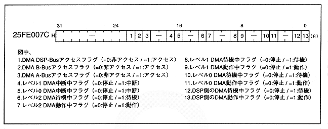

Return to previous page
｜
Return to menu
｜
Go to next page
DMA status register
Figure 1.9 shows the DMA status register map. This register represents the level 2-0 state status.
Figure 1.9 DMA status register map
■ DSP program control port
Figure 1.10 shows the DSP program control port map. DSP control register. It also stores the DSP operation start address and end address.
Figure 1.10 DSP program control port map

Return to previous page
｜
Return to menu
｜
Go to next page